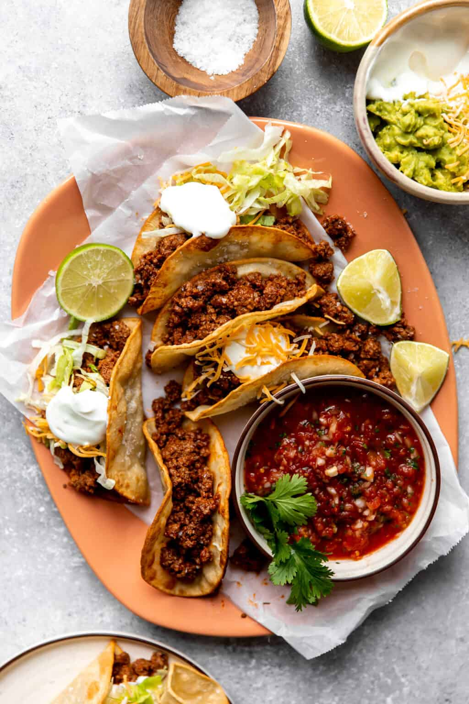

Tacos

Description
Tacos are a delicious and versatile Mexican dish that can be enjoyed by people
of all ages. They are made with a soft tortilla that is filled with a variety
of ingredients, such as meat, beans, rice, vegetables, and cheese. Tacos can be
served with a variety of sauces, such as salsa, guacamole, and sour cream.
Ingredients
Ground Beef: The best meat to use for taco meat is a simple ground beef, a
70-80% lean. The fat is going to help give flavor to the meat and we are able
to drain the grease prior to serving.
Tomato Sauce: grab any kind of canned, pureed tomato sauce. Or if you want
more spice you could use a thick salsa instead.
Oil: this is used for frying up the tortillas. Use either a canola or a vegetable oil.
Tortillas: white corn tortillas fry up perfectly to make a crisp taco shell.
If you would prefer you could use flour tortillas and not fry them. I would
recommend using tortillas that are 6 inches.
Steps:
-
Cook the ground beef, cook it up until it's completely browned. Drain the
grease. Then when we return to the heat to the stove lower the heat, add
the homemade taco seasoning and a small amount of tomato sauce.
-
Allow the taco meat to simmer briefly in the sauce to give more flavor.
-
Fry the corn tortillas in a small amount of oil in a medium size skillet.
Once fried on both sides, remove the tortillas and fold in half to form their shape.
-
Fill the taco shells with the cooked beef and any toppings desired.